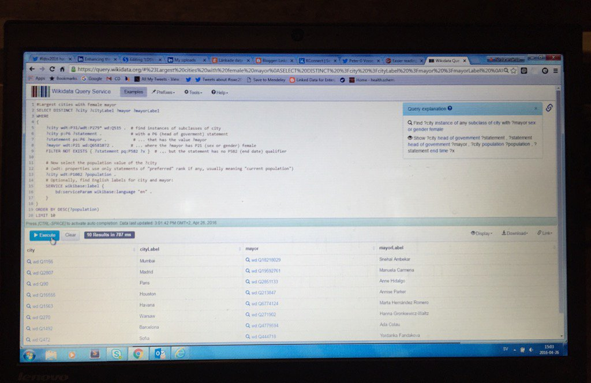
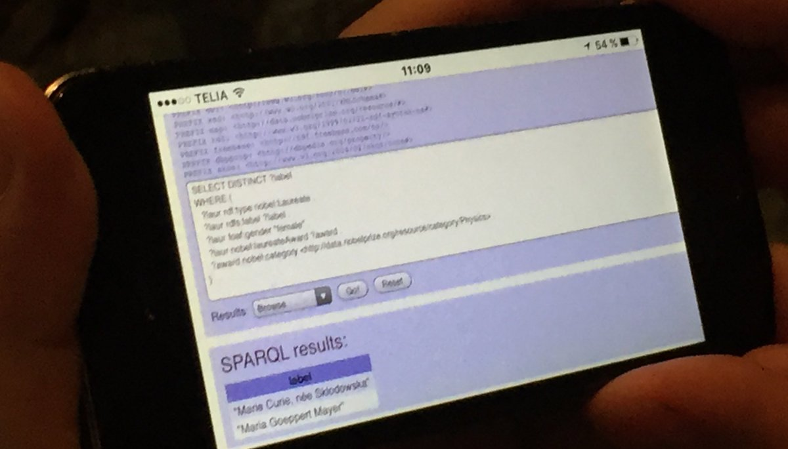
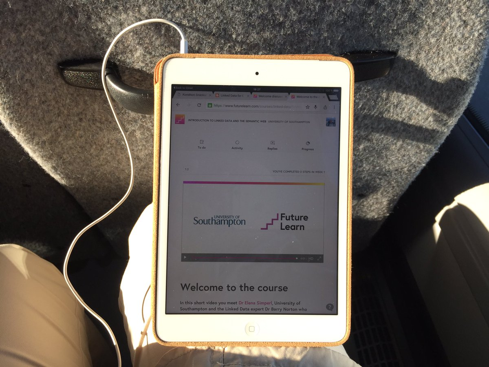

April 2016
I hope Josef follow up his #CDISCEurope talk with a blog post on cdiscguru.blogspot.se or cdisc-end-to-end.blogspot.se twitter.com/angelo_tinazzi…
Great example. Even though, I was thinking of @openFDA's open.fda.gov/data/faers/ with harmonized identifiers twitter.com/Trifacta/statu…
Yesterday I gave a brief update: "Linked Data efforts for data standards in biopharma and healthcare" at #ldsv2016 kerfors.blogspot.se/2016/04/linked…
+2 "But whatever the model, the #semanticweb helps us expand and adjust as we learn." -@Assero_UK assero.co.uk/2016/cdisc-sta… #CDISCEurope
+1 "We need to be far more aware of versions and the relationship between various versions." assero.co.uk/2016/cdisc-sta… by @Assero_UK
Thx for pointer Mark and @CMWallberg I'll read Dave's blog assero.co.uk/2016/cdisc-sta… with great interest. #CDISCEurope twitter.com/mlambrecht/sta…
Just learned about a #opendata site data.naturvardsverket.se as 1 of 5 Swedish agencies with a special focus on Masterdata ("Basedata" )
Running example #SPARQL queries on @wikidata query.wikidata.org while listening to #ldsv2016 presentation

The Royal Armoury (Livrustkammaren), where we are today for the #ldsv2016 meeting, on Wikidata ((Q1636176) wikidata.org/wiki/Q1636176
Presentation of KConnect EU project id.nlm.nih.gov/mesh/ by @flandqvist and @Peter_G_Voisey #ldsv2016
Learned about @kibiblioteket's plan to publish Swedish MeSH mesh.kib.ki.se as Linked Data #ldsev2016, see id.nlm.nih.gov/mesh/
Interesting build on FRBR: Functional Requirements for Information Resource (FRIR) Provenance on the Web tw.rpi.edu/web/doc/mccusk… by @jpmccu
Mentioned FRBR en.wikipedia.org/wiki/Functiona… over #ldsv2016 lunch making distinction between work, expression, manifestation, and item
First presentation after lunch at #ldsv2016 is @niklasl from National Library "On Merging Descriptions" goo.gl/Z1q2Ts
Nice to see at #ldsv2016 how @MetaSolutionsAB's EntryScape metasolutions.se/products/ has develop since 2012 and the 1st #LankadeData meeting
I'm live blogging today from the "Linked Data in Sweden, 2016" meeting in Stockholm #ldsv2016 storify.com/kerfors/ldsv20…
.@salgo60 using Nobel Media's SPARQL endpoint data.nobelprize.org/snorql/ while watching @h_e_m's #ldsv2016 talk

Two interesting events this week: @CDISC's EU conf. cdisc.org/CDISC-2016-Eur… and @HL7's Partners in interop. hl7.org/events/interop…
Updated Blog post = My presentation at the "Linked Data in Sweden, 2016" #LankadeData meeting tomorrow in Stockholm kerfors.blogspot.se/2016/04/linked…
5th Annual Workshop of the Clinical and Translational Science Ontology Group, 7-8 Sept ncorwiki.buffalo.edu/index.php/Clin…
One more item for my presentation on Tuesday at #LankadeData meeting in Stockholm: ICD-11 and OWL yosemiteproject.org/2016/webinars/…
Blog: Linked Data in Sweden 2016 kerfors.blogspot.se/2016/04/linked… to prepare my short update: Linked Data efforts in biopharma and healthcare
In my presentation at "Linked Data in Sweden" meeting I'll point to Medical Subject Headings (MeSH) RDF Linked Data id.nlm.nih.gov/mesh/
+1 "Moved s large number of medical/health terms from core into a health-lifesci extension." health-lifesci.webschemas.org twitter.com/danbri/status/…
Next week I'll give a brief update on #FHIR and RDF hl7-fhir.github.io/rdf.html at the "Linked Data in Sweden" meeting
Would have loved to attend this meeting in DC next week, but not doable: Partners in Interoperability Program #FHIR hl7.org/events/interop…
I'll will give a short update on linked data in pharma & healthcare eg #CDISC in RDF cdisc.org/rdf at eventbrite.com/e/lankade-data…
Bookmarked: "OpenTrials: towards a collaborative open database of all available information on all clinical trials… ift.tt/1NxCIrW
Is this an opportunity to get #WHODrug in a version using modern semantic standard ie RDF and URIs? #LinkedData twitter.com/umcglobalsafet…
Train tickets booked for "Linked Data in Sweden meeting" in Stockholm, 26 April. Looking forward #LankadeData eventbrite.com/e/lankade-data…
Struck by OWL: The Adoption of Semantic Web Standards for ICD-11 - Mark Musen - Yosemite Project Webinar yosemiteproject.org/2016/webinars/…
One more interesting event to catch up on from this week #ukon2016 2016 UK Ontology Network workshop conferences.ncl.ac.uk/ukon2016/progr…
Would have loved to hear: "Mr WWW" @timberners_lee, "Mr Semantic Web @jahendler, and "Mr AI" norvig.com twitter.com/jahendler/stat…
"You might find it surprising that such a thing doesn’t already exist." #opentrials #alltrials twitter.com/medicalevidenc…
Good questions. Would be great to see notes from #www2016 #ldow2016 discussion on #linkeddata and #blockchain twitter.com/marin_dim/stat…
yes, pls "combo of Notebooks (reproducible research) and Linked Data (processable data)" kerfors.blogspot.se/2015/06/jupyte… twitter.com/rtroncy/status…
Great blog post. Many of us try to understand blockchains and the applications of this technology. twitter.com/jamesmalone/st…
Sunny afternoon on the bus home watching MOOC Intro to LinkedData SemanticWeb #FLLinkedData futurelearn.com/courses/linked…

Interesting read to understand the use of #blockchain for informed consent for clinical trial data twitter.com/columbiastlr/s…
@salgo60 Hej Magnus, kul att se fler #lankadedata intresserade. Har du sett: eventbrite.com/e/lankade-data… (ps: cool kajakbild)
Montreal is a favorite city since I attended the Semantic Trilogy conference week there in 2013 twitter.com/kerfors/status…
Woow it is 20 years since I attended my first @w3c conference. Looking forward to folllow #www2016 feed next week. twitter.com/kerfors/status…
How the technology behind bitcoin is going to change the lives of the bottom billion: A 2016 World Changing Idea: fastcoexist.com/3056481/how-th…
My Storify storify.com/kerfors/vitali… from yesterday's @HL7 Sweden's #FHIR workshops #vitalis2016 Thanks @ewoutkramer @Ringholm
"#PervasiveSemantics: something that flows freely across numerous components acting as clients and suppliers." twitter.com/wolands_cat/st…
Congrats colleagues to the Knowledge Management award for CI360 a #LinkedData solution twitter.com/bioitworld/sta…
World Best Practices Award Winner #BioIT16, Knowledge Management, @AstraZeneca's CI360, hybrid #LinkedData #BigData news.sys-con.com/node/3755977
"you're going to find those passionate people who are really interested in using your data in new ways" twitter.com/datasci4good/s…
One more blog to read up on after #vitalis2016: The Fhirplace | HL7 Fhir related stories and lore, by @ewoutkramer thefhirplace.com
The SMART on FHIR @SMARTHealthIT Gallery gallery.smarthealthit.org mentioned by @ewoutkramer in #vitals2016 workshop
Interesting blog by @johnmoehrke on key topics for #FHIR: security, provenance and privacy consent healthcaresecprivacy.blogspot.se #vitalis2016
Interesting read about standardisation and language inthelandofinventedlanguages.com HT @ewoutkramer in the #FHIR workshop at #vitalis2016
Excellent blogpost on combing technologies from @neo4j, @Linkurious and @SciBite scibite.com/whats-new/entr…
In Stockholm in May gotosthlm.com/conferences/1/ Keynote speaker @adrianco made me aware of the power of #microservices gotosthlm.com/conferences/1/…
Very nice slidedeck include some slides on AstraZeneca's IntelligentPharma Architecture twitter.com/callistaent/st…
Looking forward to the @HL7 #FHIR #Vitalis2016 workshop later this week with @ewoutkramer and @Ringholm invitepeople.com/public/seminar…
Bookmarked: "SMART precision cancer medicine: a FHIR-based app to provide genomic information at the point of care… ift.tt/1V2U9Il
Partners in Interop Pgm, interesting @HL7 #FHIR event w @WayneKubick @DrTaha_FDA @CharlesJaffe @GrahameGrieve et al hl7.org/events/interop…
' "AI winter" of the 1980s and 1990s' - I remember the rise and fall of the great AI group at Volvo Data. twitter.com/theeconomist/s…